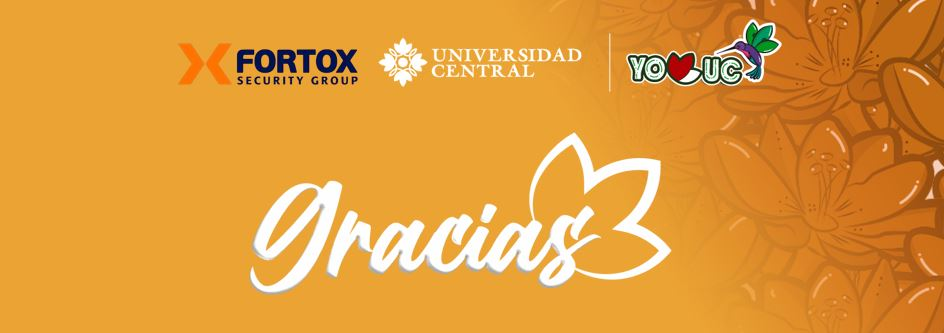
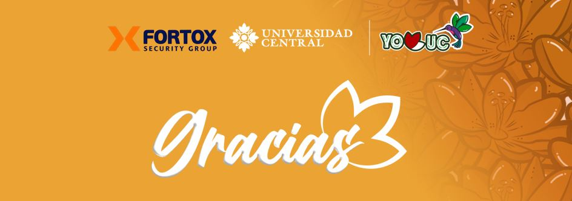

PROBLEMÁTICA Robo y asaltos: La falta de iluminación y presencia policial aumenta la probabilidad de robos y asaltos a los transeúntes. Acoso y violencia: Pueden ocurrir casos de acoso sexual y otros tipos de violencia, especialmente en zonas mal iluminadas y con poca vigilancia. Desorden público: La concentración de habitantes de calle y el consumo de sustancias psicoactivas generan situaciones de desorden y disturbios. Higiene y salud pública: La acumulación de basura y desechos, así como la falta de servicios sanitarios para habitantes de calle, generan problemas de higiene y salud pública. Bares: Consumo de bebidas alcohólicas y sustancias psicoactivas generan riñas e inseguridad en el sector.

PROBLEMÁTICA Casinos: Aumento de la delincuencia y problemas de seguridad: Atraen actividades delictivas, como robos y fraudes, tanto dentro como alrededor del establecimiento, así mismo personas con comportamientos problemáticos o criminales, lo que puede poner en riesgo la seguridad de los estudiantes y del personal universitario. Desorden público: La concentración de habitantes de calle y el consumo de sustancias psicoactivas generan situaciones de desorden y disturbios. Bares: Consumo de bebidas alcohólicas y sustancias psicoactivas generan riñas e inseguridad en el sector. Manifestantes: situaciones de confrontación entre manifestantes y fuerzas de seguridad, poniendo en riesgo la integridad física de los presentes y daño a la infraestructura.

PROBLEMÁTICA Vendedores ambulantes: obstrucción del paso, acumulación de basura, competencia desleal, riesgos de higiene alimentaria, aumento de robos, desorden, problemas de movilidad, ruido y afectación de la imagen institucional. Desorden público: La concentración de habitantes de calle y el consumo de sustancias psicoactivas generan situaciones de desorden y disturbios, específicamente al frente del auditorio Mayor Bares: Consumo de bebidas alcohólicas y sustancias psicoactivas generan riñas e inseguridad en el pasaje ley Grafiteros: Daños a la propiedad, percepción de inseguridad, vandalismo. Hurtos: Debido a la zona es sensible a hurtos y asaltos a mano armada.

PROBLEMÁTICA Vendedores ambulantes: obstrucción del paso, acumulación de basura, competencia desleal, riesgos de higiene alimentaria, aumento de robos, desorden, problemas de movilidad, ruido y afectación de la imagen institucional. Desorden público: La concentración de habitantes de calle y el consumo de sustancias psicoactivas generan situaciones de desorden y disturbios. Grafiteros: Daños a la propiedad, percepción de inseguridad y vandalismo Hurtos: Debido a la zona es sensible a hurtos y asaltos a mano armada

PROBLEMÁTICA Vendedores ambulantes: obstrucción del paso, acumulación de basura, competencia desleal, riesgos de higiene alimentaria, aumento de robos, desorden, problemas de movilidad, ruido y afectación de la imagen institucional. Desorden público: La concentración de habitantes de calle y el consumo de sustancias psicoactivas generan situaciones de desorden y disturbios. Grafiteros: Daños a la propiedad, percepción de inseguridad y vandalismo Hurtos: Debido a la zona es sensible a hurtos y asaltos a mano armada Iluminación: La falta de iluminación en zonas cercanas a la universidad y espacios que están en obra, incrementa la delincuencia y el riesgo de robos y asaltos. La oscuridad también dificulta la movilidad segura y reduce la eficacia de la vigilancia, complicando la identificación de situaciones de riesgo.

 
